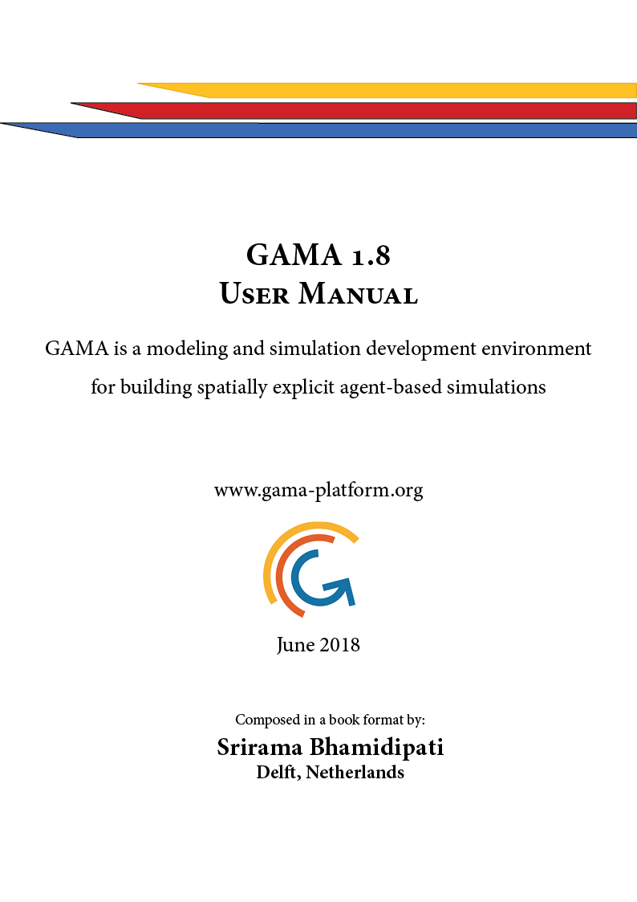

GAMA 1.8 - GAML Quick Reference for Beginners
Updated: 2019-01-03 22:31:52 (Amsterdam)
Foreword
The main purpose of this book is to provide a simple introduction with bare minimum content that helps the reader to get started with GAMA Language (GAML).
The content of this manual is from gama-platform.org website. I have modified and edited portions of the content to give a cleaner format.
This is a modified content and is not a 100% reproduction. If you do not find what you are looking for, go to the main website.
See downloads section for a different way to obtain full GAMA documentation.
I thank the Team of GAMA-Platform for giving me the permission to reproduce their content.
Cheers !
Srirama Bhamidipati
Delft, Netherlands
2019
